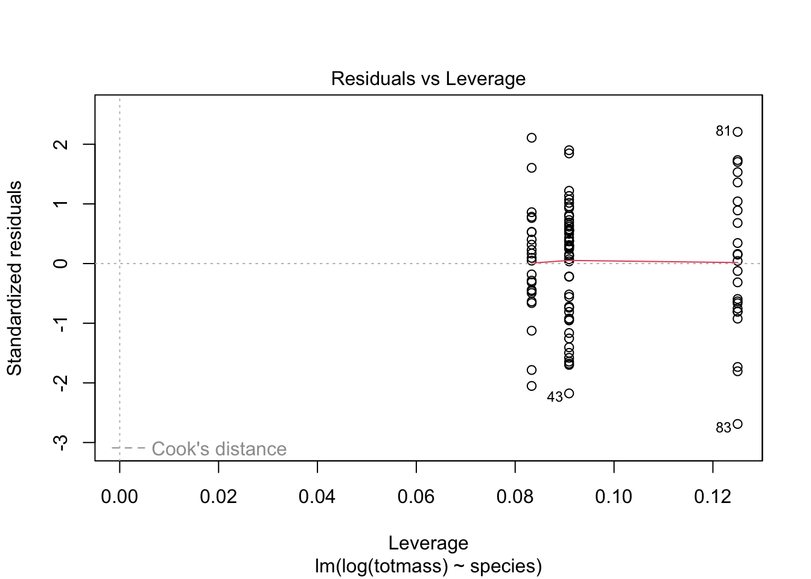

knitr::opts_chunk$set(echo = TRUE, message = FALSE, warning = FALSE)
# suppress any messages from R using the code chunk above, setting messages and warnings to falseHomework-05
Link to my GitHub Repo: https://github.com/graycen-mahon/ENVS-193DS_homework-05.git
knitr set up options for an RMarkdown document:
Organize Packages using the here package
here::here("Users/graycenmahon/Downloads/GitHub/ENVS-193DS_homework-05")[1] "/Users/graycenmahon/Downloads/GitHub/ENVS-193DS_homework-05/Users/graycenmahon/Downloads/GitHub/ENVS-193DS_homework-05"# organizing my files using the here packageSet up
# loading in important packages!
# should haves (from last week)
library(tidyverse)── Attaching core tidyverse packages ──────────────────────── tidyverse 2.0.0 ──
✔ dplyr 1.1.2 ✔ readr 2.1.4
✔ forcats 1.0.0 ✔ stringr 1.5.0
✔ ggplot2 3.4.2 ✔ tibble 3.2.1
✔ lubridate 1.9.2 ✔ tidyr 1.3.0
✔ purrr 1.0.1
── Conflicts ────────────────────────────────────────── tidyverse_conflicts() ──
✖ dplyr::filter() masks stats::filter()
✖ dplyr::lag() masks stats::lag()
ℹ Use the conflicted package (<http://conflicted.r-lib.org/>) to force all conflicts to become errorslibrary(here)here() starts at /Users/graycenmahon/Downloads/GitHub/ENVS-193DS_homework-05library(janitor)
Attaching package: 'janitor'
The following objects are masked from 'package:stats':
chisq.test, fisher.testlibrary(ggeffects)
library(performance)
library(naniar) # or equivalent
library(flextable) # or equivalent
Attaching package: 'flextable'
The following object is masked from 'package:purrr':
composelibrary(car)Loading required package: carData
Attaching package: 'car'
The following object is masked from 'package:dplyr':
recode
The following object is masked from 'package:purrr':
somelibrary(broom)
# would be nice to have
library(corrplot)corrplot 0.92 loadedlibrary(AICcmodavg)
library(GGally)Registered S3 method overwritten by 'GGally':
method from
+.gg ggplot2Reading in the dataset:
plant <- read_csv("hf109-01-sarracenia.csv") %>%
# using the function clean names, you can alter the format of the column names and use an underscore rather than a period
clean_names() %>%
# then, using the select function, you can choose the variables we are interested in
select(totmass, species, feedlevel, sla, chlorophyll, amass, num_lvs, num_phylls)Rows: 120 Columns: 32
── Column specification ────────────────────────────────────────────────────────
Delimiter: ","
chr (1): species
dbl (31): feedlevel, plant.num, fv.fm.lf1, fv.fm.lf2, totmass, rt.sht, mass....
ℹ Use `spec()` to retrieve the full column specification for this data.
ℹ Specify the column types or set `show_col_types = FALSE` to quiet this message.Visualize the missing data:
gg_miss_var(plant) + labs(caption = str_wrap("This plot shows the missing data points for the variables in question in the plant data frame. Chlorophyll content, photosynthetic rate, and Spcific Leaf Area are missing the most data points (about 10-15) while there is little to none missing for the other Sarracenia characteristics observed for the study.", width = 150))# create a missing data visualization with an accompanying caption to explain the graph. Creating a Subset of the dataframe and omitting the NA (missing data values)
plant_subset <- plant %>%
drop_na(sla, chlorophyll, amass, num_lvs, num_phylls)
# create a plant subset that is essentially the data frame we want without any NA values that would affect the data analysisCreate a correlation plot:
# calculate Pearson's r for numerical values only
plant_cor <- plant_subset %>%
select(feedlevel:num_phylls) %>%
cor(method = "pearson")
# select the numerical data by setting the range of columns wanted from feedlevel to number of phyllodes using a colon
# creating a correlation plot
corrplot(plant_cor,
# change the shape of what's in the cells
method = "ellipse",
addCoef.col = "black")
title(sub = "This correlation plot shows that there is a fairly even ditribution of both poswitive and negative linear correlations between the variables in the data subset. The red ovals shows a negative value, meaning there is a negative correlation between the variables in the column & row while the blue ovals are a positive correlation. Diagonally you can see boxes with +1 and a line drawn through them, this is because it is the comparison of the same variables. Boxes with a 0 are variables with no correlation at all.")Create a plot of each variable compared against the others
plant_subset %>%
select(species:num_phylls) %>%
ggpairs() + labs(caption = str_wrap("This plot shows the comparison of variables to one another in multiple different plots. The center diagonal plots shows the density plot for each variable. The plots below the diagonals is the scatterplot for each pair of variables. Finally, the plots above the diagonal is the Pearson correlation for each pair of variables.", width = 150))`stat_bin()` using `bins = 30`. Pick better value with `binwidth`.
`stat_bin()` using `bins = 30`. Pick better value with `binwidth`.
`stat_bin()` using `bins = 30`. Pick better value with `binwidth`.
`stat_bin()` using `bins = 30`. Pick better value with `binwidth`.
`stat_bin()` using `bins = 30`. Pick better value with `binwidth`.
`stat_bin()` using `bins = 30`. Pick better value with `binwidth`.# using the plant subset data frame, select the columns of interest as we did above and using the pipe create a gg plot of the variables in comparison to one another, with an accopanying caption. Starting regression here:
null <- lm(totmass ~ 1, data = plant_subset)
full <- lm(totmass ~ species + feedlevel + sla + chlorophyll + amass + num_lvs + num_phylls, data = plant_subset)
# create a null and full model as the base of the analysis. The first with only the total mass variable and the second being the correlation between total mass and the other predictor variables in question. Diagnostics
par(mfrow = c(2, 2))
plot(full)# then, plot the full model in order to see the QQ plot, residuals, as well as the scale location. check_normality(full)Warning: Non-normality of residuals detected (p < .001).check_heteroscedasticity(full)Warning: Heteroscedasticity (non-constant error variance) detected (p < .001).# run two tests on the plot/full model in order to check for normality and heteroscadasticity.
# non-normal distribution and heteroscadasticity detectedUsing a logarithm to create full and null models
null_log <- lm(log(totmass) ~ 1, data = plant_subset)
full_log <- lm(log(totmass) ~ species + feedlevel + sla + chlorophyll + amass + num_lvs + num_phylls, data = plant_subset)
plot(full_log)


check_normality(full_log)OK: residuals appear as normally distributed (p = 0.107).check_heteroscedasticity(full_log)OK: Error variance appears to be homoscedastic (p = 0.071).# using a logarithm to make and plot the models will make it more likely to have a better normal distribution and homoscedasticity.
# normal distribution and homoscedasticity detectedEvaluate multicollinearity:
car::vif(full_log) GVIF Df GVIF^(1/(2*Df))
species 42.351675 9 1.231351
feedlevel 1.621993 1 1.273575
sla 1.999989 1 1.414210
chlorophyll 1.949828 1 1.396362
amass 2.872084 1 1.694722
num_lvs 2.813855 1 1.677455
num_phylls 2.995510 1 1.730754Try some more models:
(addressing the question: What set of predictor variables best explains the response?)
Create and Check assumptions: log models 2-4
model_2_log <- lm(log(totmass) ~ species, data = plant_subset)
model_3_log <- lm(log(amass) ~ species, data = plant_subset)
model_4_log <- lm(log(num_lvs) ~ species, data = plant_subset)plot(model_2_log)



# they are clumped in this way because the predictors are categorical, you just want to see an even distribution of normal variables
check_normality(model_2_log)OK: residuals appear as normally distributed (p = 0.374).check_heteroscedasticity(model_2_log)OK: Error variance appears to be homoscedastic (p = 0.100).# normal distribution and homoscedasticity detectedplot(model_3_log)# they are clumped in this way becuase the predictors are categorical, you just want to see an even distribution of normal variables
check_normality(model_3_log)Warning: Non-normality of residuals detected (p < .001).check_heteroscedasticity(model_3_log)Warning: Heteroscedasticity (non-constant error variance) detected (p < .001).# non-normal distribution and heteroscadasticity detectedplot(model_4_log)
# they are clumped in this way because the predictors are categorical, you just want to see an even distribution of normal variables
check_normality(model_4_log)OK: residuals appear as normally distributed (p = 0.373).check_heteroscedasticity(model_4_log)OK: Error variance appears to be homoscedastic (p = 0.639).# normal distribution and homoscedasticity detectedModel Comparisons:
compare models. using Akaike’s information criterion (AIC) values
AICc(full_log)[1] 133.9424AICc(model_2_log)[1] 157.5751AICc(null_log) [1] 306.0028AICc(model_3_log)[1] 185.4085AICc(model_4_log)[1] 48.27986MuMIn::AICc(full_log, model_2_log, null_log, model_3_log, model_4_log) df AICc
full_log 17 133.94237
model_2_log 11 157.57514
null_log 2 306.00285
model_3_log 11 185.40852
model_4_log 11 48.27986MuMIn::model.sel(full_log, model_2_log, null_log, model_3_log, model_4_log)Warning in model.sel.default(full_log, model_2_log, null_log, model_3_log, :
response differs between modelsModel selection table
(Int) ams chl fdl num_lvs num_phy sla spc df
model_4_log 1.8800 + 11
full_log -1.3390 0.002338 0.004368 -0.4743 0.09176 -0.03959 -0.002493 + 17
model_2_log 0.8836 + 11
model_3_log 2.9720 + 11
null_log 1.3500 2
logLik AICc delta weight
model_4_log -11.689 48.3 0.00 1
full_log -46.371 133.9 85.66 0
model_2_log -66.337 157.6 109.30 0
model_3_log -80.254 185.4 137.13 0
null_log -150.941 306.0 257.72 0
Models ranked by AICc(x) Results
summary(model_4_log)
Call:
lm(formula = log(num_lvs) ~ species, data = plant_subset)
Residuals:
Min 1Q Median 3Q Max
-0.78090 -0.18575 0.01373 0.16888 0.75954
Coefficients:
Estimate Std. Error t value Pr(>|t|)
(Intercept) 1.879515 0.086007 21.853 < 2e-16 ***
speciesalata 0.002159 0.119071 0.018 0.9856
speciesflava 0.211978 0.121632 1.743 0.0847 .
speciesjonesii 0.309826 0.132545 2.338 0.0216 *
speciesleucophylla -0.301496 0.121632 -2.479 0.0150 *
speciesminor -0.130631 0.121632 -1.074 0.2856
speciespsittacina 0.590666 0.119071 4.961 3.16e-06 ***
speciespurpurea -0.283804 0.132545 -2.141 0.0349 *
speciesrosea -0.623891 0.132545 -4.707 8.74e-06 ***
speciesrubra -0.090296 0.121632 -0.742 0.4597
---
Signif. codes: 0 '***' 0.001 '**' 0.01 '*' 0.05 '.' 0.1 ' ' 1
Residual standard error: 0.2853 on 93 degrees of freedom
Multiple R-squared: 0.5805, Adjusted R-squared: 0.5399
F-statistic: 14.3 on 9 and 93 DF, p-value: 3.119e-14table <- tidy(model_4_log, conf.int = TRUE, exponentiate = TRUE) %>%
mutate_if(is.numeric, round, 3) %>%
# using mutate, I rounded each value to have 3 decimal places
# make it into a flextable using the flextable function
flextable() %>%
# fit it to the viewer using autofit!
autofit()
tableterm | estimate | std.error | statistic | p.value | conf.low | conf.high |
|---|---|---|---|---|---|---|
(Intercept) | 6.550 | 0.086 | 21.853 | 0.000 | 5.522 | 7.770 |
speciesalata | 1.002 | 0.119 | 0.018 | 0.986 | 0.791 | 1.269 |
speciesflava | 1.236 | 0.122 | 1.743 | 0.085 | 0.971 | 1.574 |
speciesjonesii | 1.363 | 0.133 | 2.338 | 0.022 | 1.048 | 1.774 |
speciesleucophylla | 0.740 | 0.122 | -2.479 | 0.015 | 0.581 | 0.942 |
speciesminor | 0.878 | 0.122 | -1.074 | 0.286 | 0.689 | 1.117 |
speciespsittacina | 1.805 | 0.119 | 4.961 | 0.000 | 1.425 | 2.287 |
speciespurpurea | 0.753 | 0.133 | -2.141 | 0.035 | 0.579 | 0.980 |
speciesrosea | 0.536 | 0.133 | -4.707 | 0.000 | 0.412 | 0.697 |
speciesrubra | 0.914 | 0.122 | -0.742 | 0.460 | 0.718 | 1.163 |
Use gg predict to back transform estimates:
model_pred <- ggpredict(model_4_log, terms = "species", back.transform = TRUE)Model has log-transformed response. Back-transforming predictions to
original response scale. Standard errors are still on the log-scale.plot(ggpredict(model_4_log, terms = "species", back.transform = TRUE), add.data = TRUE) + labs(caption = str_wrap("This table shows the predictor variable (Number of Leaves) in comparison to the species in relation to biomass. The dots are for each observation and the lines represent the confidence intervals.", width = 140))Model has log-transformed response. Back-transforming predictions to
original response scale. Standard errors are still on the log-scale.model_pred# Predicted values of num_lvs
species | Predicted | 95% CI
----------------------------------------
alabamensis | 6.55 | [ 5.52, 7.77]
alata | 6.56 | [ 5.57, 7.73]
flava | 8.10 | [ 6.83, 9.61]
jonesii | 8.93 | [ 7.31, 10.91]
minor | 5.75 | [ 4.85, 6.82]
psittacina | 11.82 | [10.04, 13.93]
purpurea | 4.93 | [ 4.04, 6.03]
rubra | 5.98 | [ 5.05, 7.10]Introduction
Also known as pitcher plant, the Sarracenia is a carnivorous plant found in the eastern United States and Canada (Bledzki et al). It has pitcher-like leaves filled with a toxic and corrosive liquid (Bledzki et al). This liquid is what breaks down and allows the plant to consume its prey! According to a study published in the National center for Biotechnology Information, the Sarracenia plant has many ethno-botanical uses such as: treating type II diabetes and tuberculosis (Huang et al). Studies also show this species as a potential treatment for cancer (Huang et al). The current and theorized uses of this plant could be groundbreaking, and therefore have sparked the interest of many scientists and botanists. Furthermore, predicting the biomass through physiological methods (the mass of the fluid in the Sarracenia leaves) is useful in assessing it’s potential for prey consumption as well as observing the targeted prey of the species (Bledzki et a). Ecological studies of this species can show population dynamics of common organisms that are prey of the Sarracenia plant and how it affects the environment (Bledzki et al). In this analysis, I am addressing the following question: How do Sarracenia characteristics predict biomass? In order to answer this question, I will test the hypothesis that different Sarracenia characteristics (such as feed level, chlorophyll content, photosynthetic rate, number of leaves as the number of predatory phyllodes) have a positive affect on the plants biomass. Through this analysis of the data, I will either accept or reject this hypothesis and it will be shown through my work. For this study, the data was sampled by selected two plants of each of the Sarracenia species and they were then assigned to a specific “feeding level”, ranked 1-6. The rankings coincided with the size of the plants, and were therefore given different amounts of feed. Over 7 weeks (on a once a week feeding schedule) the plants were measured for their size as well as photosynthetic rate both prior to and during the treatment.
Methods:
In order to organize the data, it first must be read into R studio using the read_csv function. I created a new object called “plant”and stored the data set within this object. After reading in the data, I used the clean_names and select functions in order to make the column titles easier to read & work with in R and reduced the numbers of variables shown in the data set with only the characteristics I am interested in remaining. Afterwards, I created a missing data visualization using the data frame “plant” in order to show the missing data points for each characteristic in question. This shows that out of the 120 observations of Sarracenia plants, there is about 10% of missing data (each) for Chlorophyll content, Photosynthetic rate, and leaf area. Missing data can skew the analysis of a data set, and therefore should be accounted for when looking at and running tests on a data frame. After creating the missing data visualization in order to determine the relationships between numerical variables in our data set, we calculated Pearson r and visually represented correlation using a correlation plot. The plot shows the correlation between different variables, with +1 showing a positive correlation and -1 showing a negative correlation (while 0 is no correlation). In the visualization showing the relationships between the two variables, each graph is plotting different variables against one another. The linear plots down the diagonal show the density relationship for each variable, while the plots on the top row and the leftmost row are plots of each variable with species. The squares above the diagonal are the Pearson correlation values while the plots below the diagonal are scatter plots of a pair of variables compared to one another. After creating the visualization plot, I made a null model as well as a full model. The null model is used to show the prediction that there is no effect of the variables on the data set while the full model shows the effect of each variable on the data set. After creating the models, I visually assess normality and homoskedasticity of residuals using diagnostic plots for the full model: I also tested for normality using the Shapiro-Wilk test (null hypothesis: variable of interest are normally distributed). We tested for heteroskedasticity using the Breusch-Pagan test (null hypothesis: variable of interest has constant variance). However, aftering running both these tests, I discovered that for the full model, there is a non normal distribution of residuals detected as well as heteroscedasticity (a non-constant error variance). Afterwards, I decided to make a logarithmic model of both the full and null model. Using the logarithm of one or more variables improved the fit of the model by transforming the distribution of the features to a more normally-shaped bell curve. This transformation allows for simpler statistical analysis and a better understanding of the data. After analyzing the full model I then created three more models with three different predictor variables. For my other three models, I chose the variables total mass, photosynthetic rate, and the number of leaves on the Sarracenia plants. I chose total mass first because I believe that it has a strong relationship with biomass potential. Sarracenia plants attract, trap, and consume different insects using their pitcher-like stems. Prey availability, or the lack thereof, may have an effect on the mass of the plant. Secondly, I chose photosynthetic rate as the second predictor variable because prey availability may have drastic effect on the rate of photosynthesis (amass) through access to nutrients that are extracted from the insects consumed. Amass is driven by the plants ability to maintain nutrient levels as well as access to food. Lastly, I chose number of leaves as the last variable because of it’s effect on plant size. more leaves is indicative of more nutrients, which is caused by a large amount of prey availability. Next, we evaluated multicollinearity by calculating generalized variance inflation factor and determined that, for the full model, all the variables have a GVIF value that’s greater than 1. This means that the variables are moderately coordinated in this data set which therefore leads to the conclusion that as one variable changes, the other variables are altered as well.
Results
The best model shown from this analysis is the model containing the predictor variable “num_lvs” (number of leaves) for the Sarracenia plant. It was chosen based on the AICc values, which showed that the 4th model model has the lowest value. Therefore is the best predictor of total biomass is the number of leaves on the Sarracenia plant. Model 4, henceforth known as the Leaves Model, was checked for both normality of distribution and homoscedastic errors, which we found evidence of both. The residuals vs fitted plot shows that there is a linear relationship between the dependent and independent variables There is no true pattern of the points, they are randomly distributed on the plot. Secondly, the QQ plot shows that the data set follows a mostly normal distribution. Towards the end of the graph the data points veer off the dotted line, but the majority of the data indicates a normal distribution. In the third plot (Scale-location), testing for the ratio of variance, we can see that due to the data points being pretty evenly distributed along the fairly straight red line, that the data set is indeed homeoscedastic. Lastly, the final plot (Residuals vs Leverage) is a plot that shows which, and how many, points in a data set are considered influential. If any point in this plot falls outside of Cook’s distance (the grey dashed lines on the graph) then it is considered to be an influential observation and if removed from the data set, the coefficients would change drastically. This specifc plot shows that there are very few influential points in the data set, with most of the points falling within the dotted lines. As the data is normally distributed, it rises and falls in a bell curve meaning that at some point the biomass of the plant decreases, even though there are many leaves. However, biologically, this models tells me that as the number of leaves increases for a Sarracenia plant, its biomass also increases. This is true across all species of Sarracenia included in the study.
Sources:
Bledzki, Leszek A. et al. “Population Growth and Production..” Department of Biological Sciences, Mount Holyoke College, 1998 https://link-springer-com.proxy.library.ucsb.edu/content/pdf/10.1023/A%3A1003566729588.pdf
Ellison, A. and E. Farnsworth. 2021. Effects of Prey Availability on Sarracenia Physiology at Harvard Forest 2005 ver 18. Environmental Data Initiative. https://doi.org/10.6073/pasta/26b22d09279e62fd729ffc35f9ef0174 (Accessed 2023-06-02).
Huang, Yen-Hua et al. “Anticancer and Antioxidant Activities…”, National Center for Biotechnology Information, National Library of Medicine, 2022 https://www.ncbi.nlm.nih.gov/pmc/articles/PMC9269354/